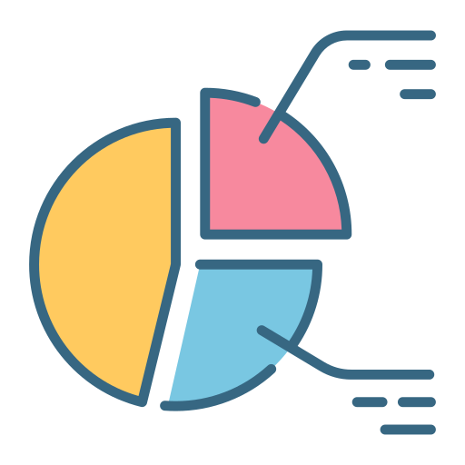
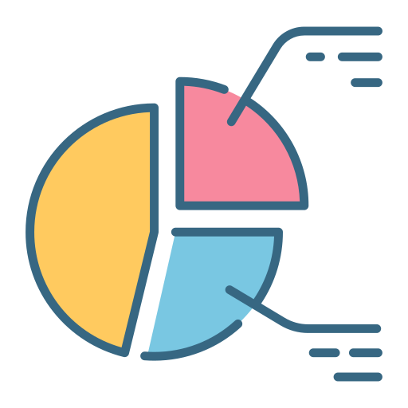

Visualization Tool Activity
Data Resources 📚
Project Overview 📝
This project consists of three parts, focusing on data visualization using various libraries and tools. We explore datasets from Kaggle to analyze and represent data effectively.
Part 1: Course 8 Week 1 & 2 Activity 📈
In this section, we selected a dataset and created visualizations using different libraries, including Matplotlib, Seaborn, and Plotly.
Approach:
- Dataset Selection: Describe the dataset you chose.
- Libraries Used: List the libraries you implemented and why you selected them.
- Visualizations Created: Briefly explain the types of visualizations created and the insights gathered from them.
Evaluation:
Discuss whether the chosen tools were appropriate for representing and analyzing your selected dataset.
Part 2: Course 8 Week 3 Activity 📊
Building upon the previous work, we focused on advanced visualizations to uncover deeper insights.
Selected Visualizations:
- Waffle Charts 🍰
- Word Clouds ☁️
- Seaborn & Regression Plots 📉
- Geospatial Data Visualization (using Folium, maps with markers, and Choropleth maps) 🗺️
Resources:
Word Clouds with Python ☁️
Generating Word Cloud ☁️
Waffle Charts with Matplotlib 🍰
Creating Waffle Charts 🍰
Part 3: Course 8 Week 4 Activity 📊
In the final part, we implemented a simple dashboard to showcase our visualizations.
Dashboard Implementation:
- Describe the dashboard's layout and functionality.
- Highlight any interactivity or features you added.
Resources:
Introducing Dash 🚀
Dashboards in Python: Advanced Examples 🖥️
Awesome Dash GitHub Repository 📦
Dash Documentation 📚
Output 🎥